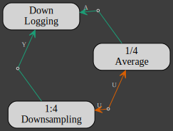

Aggregation
Aggregation refers to the process of generating a larger model from existing models and actors. The aggregation function is implemented with the Add trait.
For example, the actors in the multirate section could have been sorted out according to their sampling rates into 3 different models
- 1
let one = model!(signal, logger)
.name("nominal-sampling-rate")
.flowchart();
DOWNRATE
let quarter = model!(downsampler, averager, down_logger)
.name("quarter-sampling-rate")
.flowchart();
UPRATE
let half = model!(diff, up_logger)
.name("half-sampling-rate")
.flowchart();
The complete model is then written:
(one + quarter + half)
.name("multirate-aggregated-model")
.flowchart()
.check()?
.run()
.await?;
Aggregation applies to both actors and models with the same outcome: a new model. Below is the table of the types that can be aggregated into a model:
LHS | + | RHS | = | Add::Output |
|---|---|---|---|---|
Model | + | Model | = | Model |
Model | + | Actor | = | Model |
Actor | + | Model | = | Model |
Actor | + | Actor | = | Model |